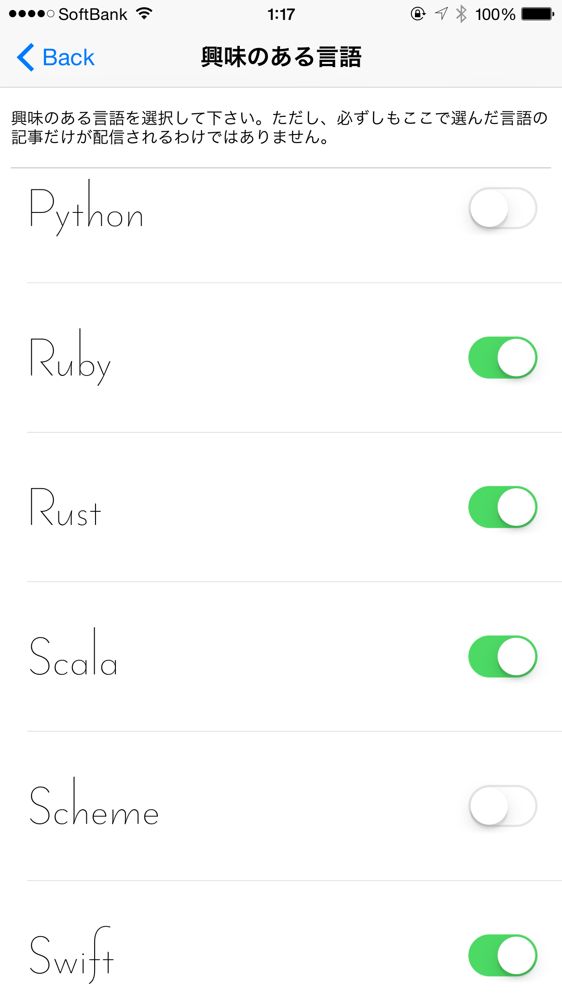
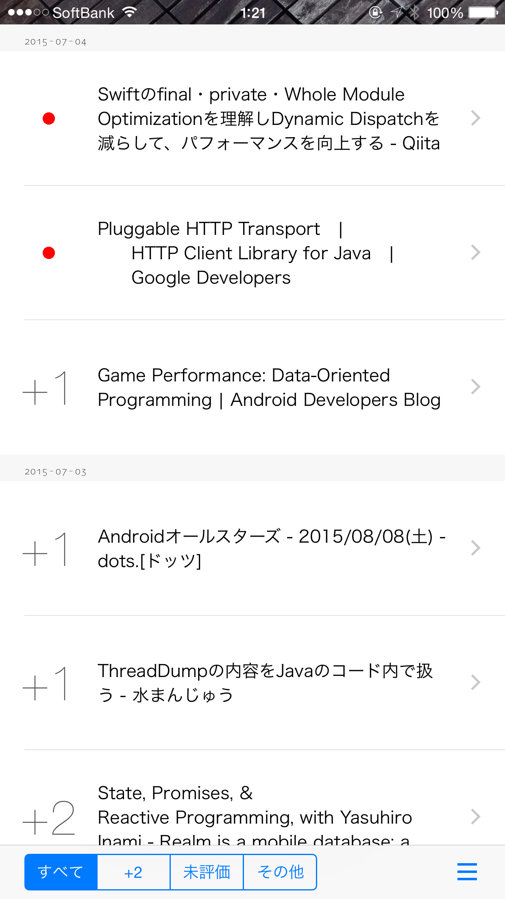
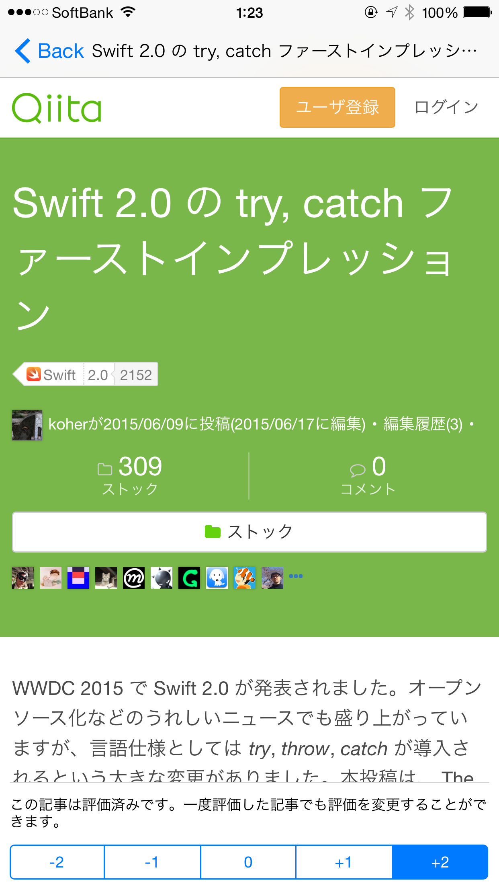

毎日数本、あなたのために選ばれたプログラミング関連の記事を配信します。記事を評価するとあなたの好みが分析され、より適切な記事が配信されるようになります。

メジャーな言語からマイナーな言語まで、 articles.each { では 30 以上のプログラミング言語から興味のある言語を選択できます。

あなたの好みに合わせて毎日数本の記事が配信されます。レコメンデーションの仕組みを使って、あなたと好みの似たユーザーが高評価した記事が優先的に配信されます。

配信された記事には -2 から +2 までの 5 段階の評価を付けることができます。より多くの記事を評価することで、あなたの興味にマッチした記事が配信されやすくなります。
articles.each { は @koher (GitHub, Twitter, Qiita) がプライベートで開発しているアプリです。個人開発のためリソースが限られており、バグにすぐに対応できなかったり、 Android 版は iOS 版の後になってしまったりしますが、長い目で見守っていただければ幸いです。まだまだ記事選定アルゴリズムに甘いところがありますが、自分自身で利用することも想定して作っているので、ユーザー目線で継続的に改良していきたいと考えています。
要望、質問、バグの報告なども随時受け付けています。 GitHub の issues に、それぞれ request, question, bug のタグを付けて投稿下さい。